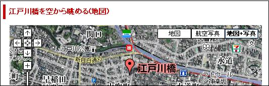
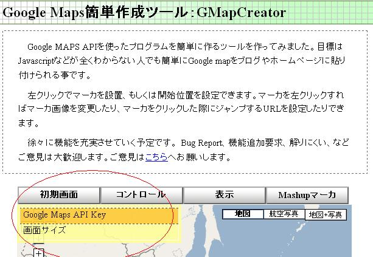
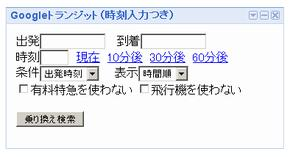
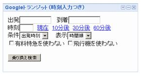

IPlanning
株式会社 アイプランニング
Towa Edogawabashi building 8F
Yamabuki-cho 347
Shinjuku-ku Tokyo
Phone: 03-5225-1147
GoogleMapをWEBページに貼り付けるには？

地図情報として便利なGoogleMapを当サイトに貼り付けた手法を公開します。
当サイトの所在地(地図)では、GoogleMapで地図情報提供し、
さらにはGoogleガジェットで、「電車の乗り換え案内検索」を取り入れました。
Google Maps(マップ)のWEB貼り付け手順
１．Google Maps(マップ)をWEB上に貼り付ける場合には、Google Maps APIのkey(キー)が必要になります。
Google Maps APIのkey取得には、Googleアカウントが必要ですので、こちらよりアカウントを取得(無料)してください。
Googleアカウントを取得するとGMailやGoogleトークなども利用できるようになりますので利用しない手はないですね。
２．Googleアカウントを取得しましたら、アカウントにログイン後、Google Maps APIのページにある「Sign up for a Google Maps API key」をクリックし
地図を貼り付けるWEBのURLなどを入力し、『Google Maps APIのkey』を取得して下さい。
３．Google Maps簡単作成ツール：GMapCreator でサクッとHTMLコードを取得する。本来ですとJavascriptなどで独自に利用する方がプログラマ向けなのですが、今回は、このGMapCreatorで、さくっとWEB上に貼り付けましょう。

４．Google Maps簡単作成ツール：GMapCreator の「初期画面」ボタンにマウスを移動すると「Google Maps API key 」がメニュー表示されます。
このメニューを選択し、あなたの「Google Maps API key 」を入力し「OK」ボタンを押して下さい。これで最低限の準備が完了です。
４．Google Maps簡単作成ツール：GMapCreator の「初期画面」ボタンにマウスを移動すると「Google Maps API key 」がメニュー表示されます。
このメニューを選択し、あなたの「Google Maps API key 」を入力し「OK」ボタンを押して下さい。これで最低限の準備が完了です。
５．次に、Google Maps簡単作成ツール：GMapCreator に表示されているGoogleMapであなたの表示したい地域をマウスドラックや、「＋」「−」バーで選びます。
目的の場所が見つかったら、その地点をクリックして下さい。すると「マーカーを追加」「ここを開始位置に設定 」などの
メニューが表示されますので、それぞれクリックしてGoogleMap初期表示情報を設定して下さい。(他のメニューもお好みで設定)
６．次に、地図の下にある「コード生成」ボタンを押すと、あなたのGoogleMapを表示してくれるHTMLソースコードが出力されます。
ここで生成されるHTMLは、文字コード(charset)が、utf-8ですので、HTMLファイルを作成する時に注意が必要です。
また、iframeを使う場合の記述も書かれていますので利用してみてください。
※当サイトもiframeを使用しています。
GoogleMapのHTMLソースコードをWEB公開する手順は以上で終了です。簡単にできるのもGMapCreatorのおかげですね。
当サイトでの例：所在地(地図)
当サイトでの例：所在地(地図)
Gadgets(ガジェット)のWEB貼り付け手順
１．Googleアカウントにログイン後、ウェブページ用Googleガジェットから好みのガジェットを探し出す。
２．「自分のウエブページに追加」ボタンをクリックし、表示設定などをお好みに設定して、「コードを取得」ボタンを押すと、Javascriptのコードが表示されますので、これをWEBページの好きな場所に貼り付ければ完了です。

※当サイトでは、乗り換え検索ガジェットを利用しています。

※当サイトでは、乗り換え検索ガジェットを利用しています。
参考にしたサイト
アイプランニング技術情報
このページでは、アイプランニング社員が調査したこと、学んでいることが具体的にどんなものなのかを披露してきます。
プログラム初心者の方向けの情報から、超マニアックな分野の情報まで随時提供していきますのでお楽しみ下さい。
技術情報TOPページ
技術情報TOPページ
GoogleMaps(マップ)とは？
GoogleMaps(マップ)とは、Googleが提供する地図情報サービスです。目的の場所付近にはどんな建物があり、雰囲気はどんな感じなのかを航空写真付きの地図情報から様子を伺えます。目的の場所で、マウス一つで、衛星写真および航空写真を使用して拡大や縮小したり、移動したりすることができます。
世界中の空からの眺めを一望できるとあって人気のサービスとなっています。APIも公開されており「GoogleMaps Key」を取得すれば誰でも利用できます。もちろんWEBに貼り付けることもできます。
GoogleGadgets(ガジェット)とは？
Google Gadgets(ガジェット)とは、コンテンツ情報を取得したり、ゲームを行なったりできる規模の小さなソフトウェアです。公開されているGoogle Gadgetsの数は1,000種類を超え、その中には、交通情報、天気予報、カレンダー、ニュース速報、さらには、パックマンなどの簡単なゲームなど、さまざまな種類のガジェットが無料で公開されています。
プログラマ募集中・・・
■第一は「人物重視」
お客さまの立場に立ってモノが作れる判断力、企画力、コンサルティング能力を磨きたくはありませんか？プログラム能力は、プロジェクトを通じて自然と能力があがるようなシステムになっています。初心者プログラマであっても３年程度で、その能力は初心者だったとは思えないくらいのスキルとなっています。
これは、「最初は誰でも初心者だ」という教育方針があるため、また、多くの社員が入社して初めてプログラミングにふれたという経験があるために自分のつまづき体験や、成功体験を含めた教育がなされているからなのです。
このようにアイプランニングでは、社員１人ひとりの個性と人間性を重視し、スキルにあったマンツーマン教育であなたを一人前のエンジニアへと成長させていきます。 それは誠実なスタッフが集まっているからこそ、どんなお客様からも信頼される企業に成長できるから。私たちはそう考えています。
お客さまの立場に立ってモノが作れる判断力、企画力、コンサルティング能力を磨きたくはありませんか？プログラム能力は、プロジェクトを通じて自然と能力があがるようなシステムになっています。初心者プログラマであっても３年程度で、その能力は初心者だったとは思えないくらいのスキルとなっています。
これは、「最初は誰でも初心者だ」という教育方針があるため、また、多くの社員が入社して初めてプログラミングにふれたという経験があるために自分のつまづき体験や、成功体験を含めた教育がなされているからなのです。
このようにアイプランニングでは、社員１人ひとりの個性と人間性を重視し、スキルにあったマンツーマン教育であなたを一人前のエンジニアへと成長させていきます。 それは誠実なスタッフが集まっているからこそ、どんなお客様からも信頼される企業に成長できるから。私たちはそう考えています。
■応募者へのメッセージ
プログラマを目指して会社に入ったものの、思った通りの仕事をさせてもらえなかったと思っている人、教育システムが十分でなかったためにスキルが身に付いていないと思っている人も気軽にご応募ください。パソコンのスキルに自信のない方でも、マンツーマンの研修制度で一人前に成長できるフィールドを整えておりますので安心してご応募くださいね。
知識だけでなく本当の開発力が身につく環境でのシステム開発でみつかる『やりがい』はもちろん、プライベートでも今までになかった充実感が得られますよ。
プログラマを目指して会社に入ったものの、思った通りの仕事をさせてもらえなかったと思っている人、教育システムが十分でなかったためにスキルが身に付いていないと思っている人も気軽にご応募ください。パソコンのスキルに自信のない方でも、マンツーマンの研修制度で一人前に成長できるフィールドを整えておりますので安心してご応募くださいね。
知識だけでなく本当の開発力が身につく環境でのシステム開発でみつかる『やりがい』はもちろん、プライベートでも今までになかった充実感が得られますよ。